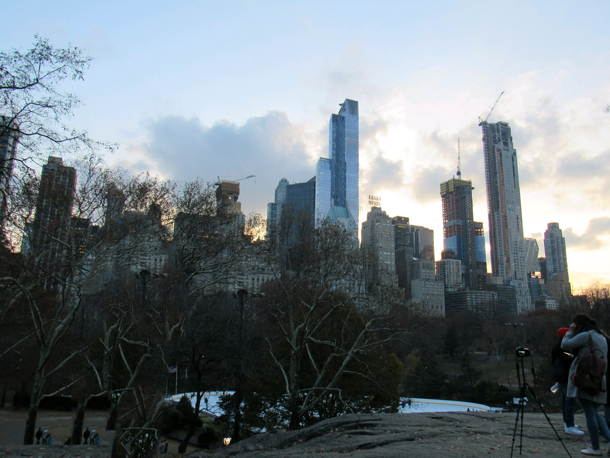

Hello this is my home page! On this website you will find various projects and information all about Emma De Witt.
On each page you will find a variety of information all about Emma De Witt. Emma is 17 years old and goes to Rosemount High School. To find out more information about Emma please click the "about me" tab. If you are interested in what projects she has created in computer science, check out the "projects" tab. You can also find some of Emma's "deep thoughts" by clicking the deep thoughts tab above. If you are interested in seeing a gallery of her pictures, click the "Photo Gallery" tab. Lastly, if you have any further questions about Emma that are not addressed on this page, please feel free to submit a question on the "questions" tab!